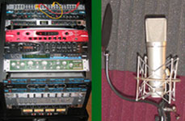

| For shows, events performance booking, please email to jinglumusic@hotmail.com | ||
| Jing Lu is now offering lessons in proper vocal techniques of various musical styles for students with talent, for detail please visit Lesson section. For private vocal lesson, please email to jinglumusic@hotmail.com | ||
| Jing Lu's performance videos is getting very hot in China, check it out at: http://space.56.com/jinglumusic | ||
| Visit Jing Lu's MySpace Music for additional songs, information, and message board: www.myspace.com/janelumusic | ||
| Jing Lu's Videos on YouTube.com and Videos on Tudou.com in China. | ||
| You can also visit Jing Lu's Baidu Space and CYWorld Space in China. | ||
| Website of 199 Studios, In Toronto Canada, where Jing Lu is currently workng on her album: www.199studios.com |  | |